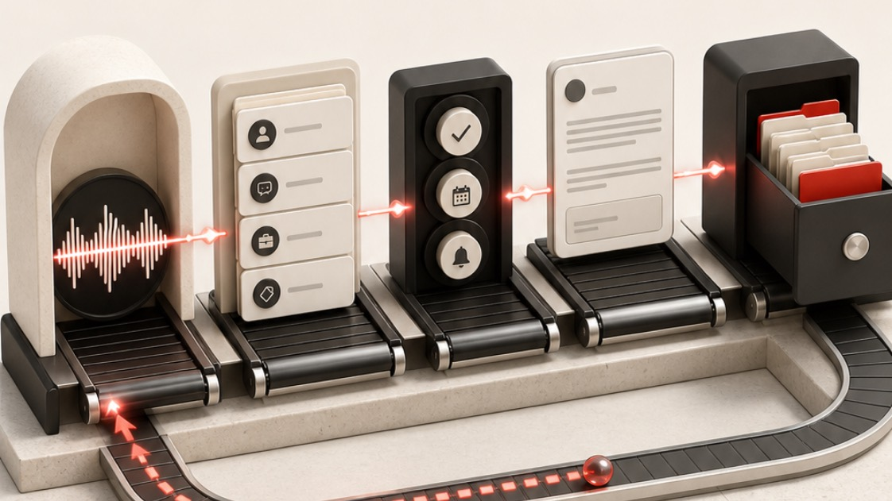

You put systems into other people's businesses for a living. Yours runs on your memory and a message thread.
You said the thing you'd actually come for about forty minutes in, once you'd stopped watching the demo: somewhere you and your 2IC can both go and find everything about a client in one place. Every conversation, the whole sales process, the lot. Your verdict on what you already pay for was that it's supposed to be that, and it isn't all there.
It isn't, and that isn't a fault in the thing you bought. Your CRM holds the relationship and holds it properly. What you're describing sits a layer above it, and there's nothing on the market to buy for that layer. This is what building it looks like.
What I heard from you

Correct me on any of this before we start. Getting it wrong here is cheap. Getting it wrong in session four isn't.
-
You want one place that holds a client, and you'd worked that out before I said anything
Not a folder of files. Something you can put a question to and get an answer from. We agreed on the call where your CRM stops: it holds the relationship, the emails, the calls if they're connected. That's the edge of the product rather than a fault in it, and the thing you're after lives past it. -
You are the wire between your own meeting and your own team
You have the conversation. Then you write the message. Then you do the handover. Then you answer the questions the handover left out. The full account already exists as a recording, and you retype a worse version of it because there's nowhere for the good one to go. -
What the tools write is competent, and it isn't yours
You've had one summarise something nobody needed summarised. What comes back is serviceable in a way that could have come from anybody, so you rewrite it, and the rewrite costs more than writing it cold. You've tested that properly and you were blunt about it. -
You're not betting your practice on the category standing still
Nobody knows what this software becomes in three years. That's the right instinct, and it's an argument for owning the layer that holds your context rather than renting it from whoever wins. -
Two of you, one subscription, and no clean way to share
You both use the same tool, there's no shared account between you, and you want the same things in front of both of you. That's a real question with three answers at three different prices, and it's answered further down rather than at the price list.
What this doesn't do
Near the front rather than in a clause at the back, because these are the places work of this kind normally balloons.
It doesn't run the practice for you
Done with you. You do the installing and the configuring while I guide it, and afterwards you're the one driving. If what you want is somebody to operate it on your behalf, that's a different purchase and probably a different supplier.
It isn't a rollout to your team
One install, one person, shaped around how you work. Putting it across everyone is separate work with its own price, and doing that before you've run yours for a month gets you three half-taught systems instead of one good one.
And the part I don't control
It sits on top of other companies' software. When one of them changes something and a piece stops behaving, I publish a fix, and I can't promise you their roadmap. Anybody offering you a warranty on that is selling you something they can't honour.
Extra brands, an always-on team setup and custom app builds sit outside this price for the same reason. They're where the hours actually go, so they get quoted on their own rather than folded in and resented later.
Where this sits next to what you already run

You asked whether this replaces your CRM. It doesn't, and I'd be wary of anyone who told you it did. You've built a practice on knowing that software properly, and nothing here competes with that.
It reads across all of it and holds the context none of them holds on its own. The work that currently lands on you because it doesn't belong in any single system is the work this takes. Nothing you've already built gets thrown away.
The honest caveat, and you'll know this better than I will
Some tools open up easily and some don't. I'll know which yours are in session two, when I can see your setup instead of assuming it. Where a connection is awkward I'll say so on the day rather than promise it now and discover it later.
The two things you'd build first

-
The conversation that files itself
You record the call. It arrives written up in your voice, against the right client, with the commitments pulled out and dated and the follow-up drafted underneath. Your job is to read it and press send. This is the one that hands you your afternoons back, and it's the build we do together in session four. -
The client file your 2IC can interrogate
Everything you hold about a client in one place she can question directly, instead of queueing behind you. You stop being the wire. This is the thing you described first, and it's why the first session is the heavy one, because it only ever works on what you put in. -
And what we leave until later
Anything touching your accounting. It can be done, and you raised it yourself, correctly. It wants your tools connected and your context loaded first, so building it in week one gets you a worse version of something you'll lean on for years.
How we do it

Four sessions over about a fortnight, then two follow-ups. Every one a screen share with you driving. I don't take the keyboard.
-
1An hour, sometimes ninety minutes · nothing connected yet
Install, and teach it the practice
I walk you through the install, then it interviews you: what you do, who you sell to, how you price, how you write, what you'd never say. It asks properly and it won't take one-word answers. Heavier than you expect, and everything after it rests on what you put in. -
2The connection session
Connect what you choose, then try to break it
Your CRM first, then mail, calendar and your recordings, one credential at a time with the limits set before each one goes near anything. Keys never live inside the system. Then the negative test: we ask it for a file and a mailbox it should have no key to, and confirm nothing comes back. Everything else in this document is an assurance. A failed break-in is the one thing you can watch. -
3About 45 minutes
Driving it properly
Which model for which job, how to hand it something large without it losing the thread, how to build yourself a small tool, and how to correct it so the correction sticks. Most of the speed lives in this session and it's the one people underrate. -
4The one that matters
Your first build, then you lead
We build the call pipeline together, start to finish. Then you build the second thing on your own while I sit there and say nothing useful. What you're buying is the moment you stop needing the person who sold it to you. -
+A few weeks apart
We swap what we've built
Two follow-ups, running both ways. You show me what you've made since, I show you what I have. With someone who does your job I expect to come off worse in that trade more often than not, which is exactly why I'd rather you used this than only sold it.
Whenever you get stuck, you call me
From the first session through to the second follow-up, by message or screen share, and nobody counts it. Included, and not a support tier. The honest boundary, which is also what the agreement says: I answer once I'm free rather than against a clock, so read it as me being reachable rather than me being on call.
The goal is a strange one for a supplier and I'll state it anyway. I want you not to need me. Within a few weeks you'll ask your own system before you ask me.
What happens when the software moves
It's on version 1.8 as I write this, released on the 16th. When the next one lands I send you a short prompt, your system reads what changed and works out what's worth folding in against what you've already built yourself. Anything that doesn't suit your setup gets skipped rather than forced. It isn't a reinstall and nothing you've made is overwritten. Every update released in your first twelve months is included, and after that you take them or leave them with your licence unaffected either way.
And the honest bit about week one
The first week is the worst week and it's better to know that before you're in it. It writes things that don't sound like you and asks you questions you'd rather not answer twice. By the third week it sounds like you, entirely on the strength of the answers you gave in the first. Everyone I've taken through this has hit that dip, and the temptation on day four is to decide the thing is broken. It isn't broken. It's uninformed, which is a different problem with a much shorter fix.
The rest of your questions
Nothing ongoing to me, and no metered credits at all. Everyone braced for a usage meter finds there isn't one: it runs on a flat subscription rather than per-token billing, so a heavy week and a quiet week cost you the same. Budget about USD $100 a month for the tier that can do real work. That goes to the model provider directly, I take no cut of it, and I don't resell it.
The arithmetic nobody does up front runs the other way: most clients start cancelling small single-purpose subscriptions within a couple of months, because they've stopped opening them.
A second seat is $5,500 plus GST, so $6,050 including. It's a build rather than a copy, because two installs are doing different jobs and diverge inside a fortnight.
My advice is not yet, and it costs me money to say so. Not because she wouldn't get value, but because you'd be buying it before either of you knows what she actually needs. Run it on yourself for a month first. A fair number of people find the second person needs to read what the first one produces rather than own one, and that costs nothing.
You already knew the timing constraint, which is the part I'd otherwise have had to tell you. So the honest version: I run on a different package with a more limited interface, yours is the more open of the two, and that puts you in the better position. But I haven't built this against yours on a live client and I'm not going to call it routine when it isn't.
Same answer as the CRM, for the same reason. We scope it in session two when I can see your setup rather than assume it. What it's good for once connected is your own chasing: it stops asking you about a payment that has already landed.
It's a folder on your own machine, Mac or PC. Your files stay there, and nothing of yours lands on my infrastructure or in a tenancy of mine. I have no login to it. Model training on your data gets switched off in session one, on your account, with you watching.
A folder on your own machine, a written brief that is the practice in your own words, the memory it builds from there, the limits you set, and a licence to run it in the business. Yours to keep and yours to extend, including if you and I never speak again.
What it costs
-
On signing · $3,025 including GST
Half, which locks your session dates and gets you the folder and your homework the same day. -
At go-live · $3,025 including GST
The other half, due after the second follow-up session rather than on a date in the diary. If your sessions move, the payment moves with them. -
One cost that isn't mine · about USD $100 a month
Your own subscription, in the company's name, on the tier that can do the work rather than just chat. Paid to the model provider, not to me.
One seat. Prices are ex GST and GST is added, which is the standard for the business-to-business work we both do.
Two weeks or more after the first session, if you tell me what isn't working and why it can't be resolved, and it then can't reasonably be resolved, the second payment is waived. I'm the one who makes that call, in good faith and after a genuine attempt at fixing it. The first payment isn't refundable.
You keep the system and everything you've built in it either way, because by then it's your business written down and it was never mine to take back. $3,025 including GST is the most this can ever cost you.
Pick your first session.
Signing takes the first payment and locks your dates, and your homework arrives the same day: where your brand assets live, two or three pieces of writing you'd be happy to be judged on, and the first client whose month you'd want rebuilt end to end. Nothing here expires and I won't chase you on Thursday.
Grab any slot that suits and I'll extend it to the full hour.
How this document got made

This is the part worth watching, because it's the mechanism rather than the pitch.
It starts as the recording of one conversation. Nobody transcribes it and nobody fills in a template. The system finds the right call among hundreds of files, reads the whole thing, checks what it hears against what it already holds about the business, the price list and every prior conversation, then writes the document and runs it past a set of checks before I ever see it. The figures are verified against the price list rather than remembered. If it can't find something, it says so instead of inventing it.
The reason it can do that is the months that came before. It knows how I write, what I charge, what I've promised other people, and which claims I'm not allowed to make. A blank chat has none of that and never will, however good the model gets. That's the difference this whole thing turns on, and it's why the first session is the heavy one.
Every identifying detail of the real conversation behind this page was removed before publishing, and a check that reads the source and fails the page if anything survives runs as part of the build rather than sitting in a promise. That check is the reason you can be shown this at all.
John, you spend your working life telling founders that the system in their head isn't a system. And then, like nearly everyone who does that job, you go back to a business held together by your own memory and a message thread.
You watched it work, you asked the questions I'd want asked, and you said you wanted to watch it run on your own work before deciding. Read this properly, argue with the parts you think are wrong, and take the time you said you'd take.